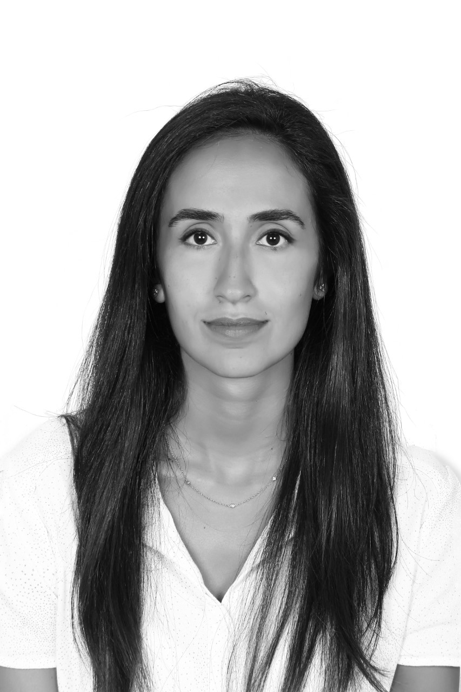

مجلس الإدارة
مجلس الإدارة هو فريق من القادة الشغوفين المستعدين لإحياء قضية من الى.
-

تالا خلاط
المؤسس والرئيس
-

الدكتور بشير عصمت
نائب الرئيس
-

جوي أبي حبيب
أمين سرّ
-

البروفيسور سليم دكاش
أمين صندوق
-

سيما العنتبلي
محاسب
عن سيما العنتبلي
تتمتع بخبرة أكثر من إحدى عشرة سنة في مجال التطوع مع الكثير من الجمعيات المحلية والعالمية، وهي تعمل حاليا كمنسقة الوقاية في حمايا، جمعية لبنانية غير حكومية تهدف الى محاربة الإعتداء على الأطفال بكل أشكاله الجسدية والنفسية والجنسية والإهمال. من خلال نشاطات توعوية، تعلم حمايا الأهل، المدارس والأطفال كيفية تجنب الإعتداء وتعرف الأطفال كيف يدافعون عن أنفسهم. إضافة الى حصولها على ماجيستر في العمل الإجتماعي المتخصص بالعمل مع الشباب والإنخراط من جامعة القديس يوسف، تتمتع سيما بخبرة عالية في مشاريع ترتبط بالتنمية الشبابية. وهي عضو ونقطة محورية مسؤولة عن الشبكة التعليمية .Youth Peer
الجمعية العمومية
كجزء أساسي من الفريق ، فهي مجموعة موهوبة تسعى إلى تحقيق أهداف من إلى.


المتدربين/ات
كجزء من برنامج التدريب في من الى، دائماً لدينا مجموعة من الشباب/ت المتفانين لدعم أهدافنا.

إتصل بنا
نتمنى ان تتواصلوا معنا!